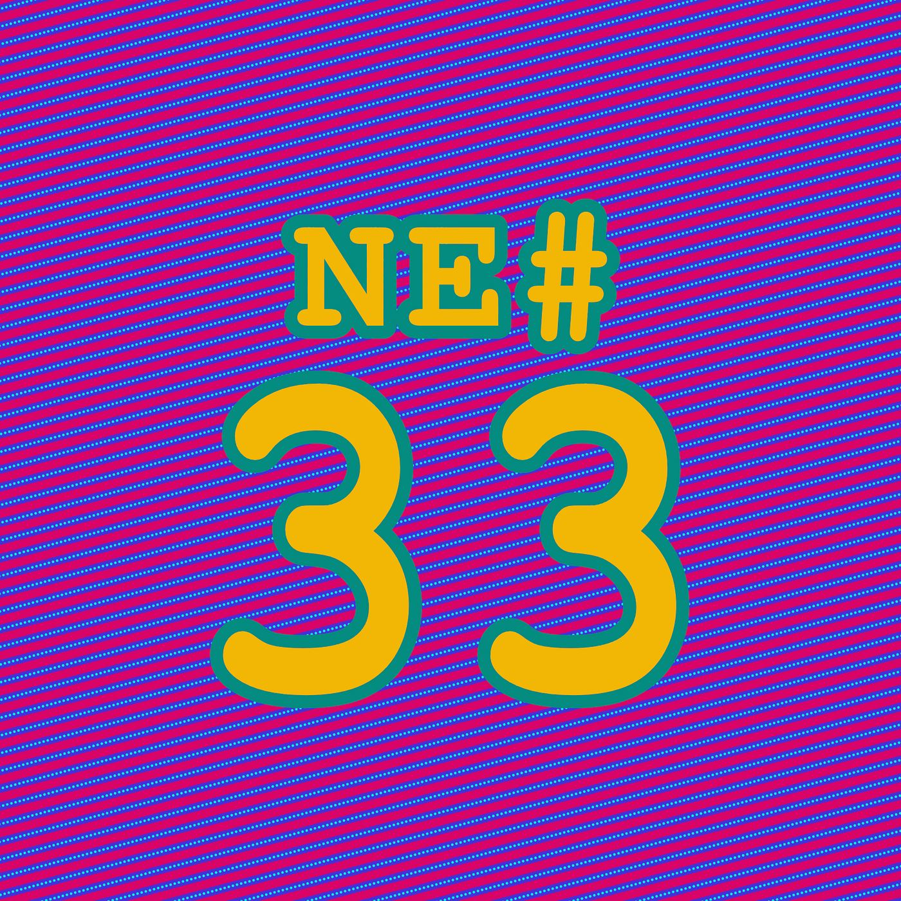
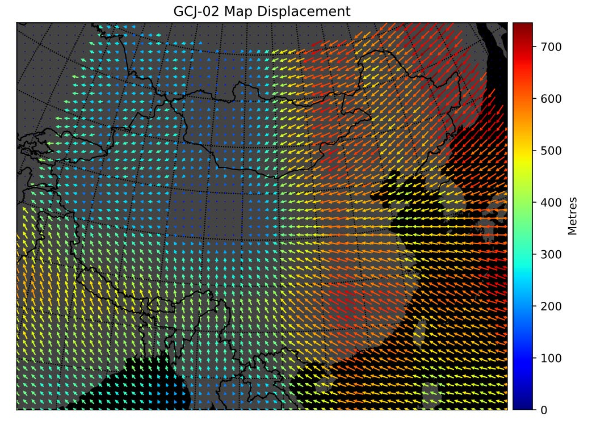

Die Nerd Enzyklopädie 33 - GCJ-02

WGS steht für World Geodetic System und beschreibt ein Referenzsystem für die Kartographie und Vermessung der Welt. Das WGS spielt unter anderem für die Navigation mit GPS eine wichtige Rolle.
Nicht jedoch in China. Dort wurde in 2002 der Standard GCJ-02 eingeführt, der zwar auf WGS basiert, aber einen Algorithmus implementiert, der dafür sorgt, dass Längen- und Breiten-Angaben anders berechnet werden [ABST1].
Dadurch ergeben sich im Vergleich zu WGS Abweichungen von bis zu 500 Metern, in Ausnahmefällen sogar mehreren Kilometern [GITH3]. Die Motivation für diesen Standard ist laut offizieller Stelle die nationale Sicherheit. In der Realität führt das dazu, dass „nicht lizensierte“ Navigationssysteme dich an den falschen Zielort schicken.

Baidu, eine chinesische Suchmaschine, geht noch einen Schritt weiter. Dort wurde der von GCJ-02 abgeleitete Standard BD-09 eingeführt, der die Koordinaten in China noch weiter verschleiert. Man will damit vermeiden, dass andere Anbieter die Daten von Baidus Kartendienst verwenden.